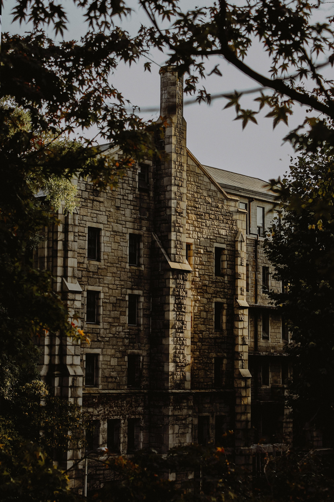

고려대학교의 모태는 1905년 설립된 보성전문학교다. 학교의 설립자는 대한제국에서 내장원경(內藏院卿)을 지낸 이용익(李容翊, 1854~1907)이었다. 그러나 개교 이후 체결된 을사조약으로 이용익이 망명을 떠난 후 천도교 지도자였던 손병희(孫秉熙, 1861~1922) 선생이 경영권을 이어받았으나 일제의 탄압과 재정난을 겪게 됐다. 1932년 동아일보 창업자인 김성수(金性洙, 1891~1955)가 학교를 인수했다. 1934년 안암동 지금의 자리로 학교를 옮겼다. 1944년 학교 이름을 경성척식경제전문학교로 변경했다.
 해방 이후인 1946년 정법대학, 경상대학, 문과대학 등 3개 단과대학으로 구성된 고려대학교가 창립했다. 1961년 서관을 완공했다. 1963년 이공대학을, 1966년 교육대학원을 각각 신설했다. 1971년 우석학원을 흡수합병해 의과대학과 부속병원을 확보하였다. 1980년 충청남도 연기군 조치원읍에 분교(서창캠퍼스 · 현 세종캠퍼스)를 세웠다. 1994년 의대 생명과학연구소를, 1998년 인공시각연구센터를 각각 설립했다.